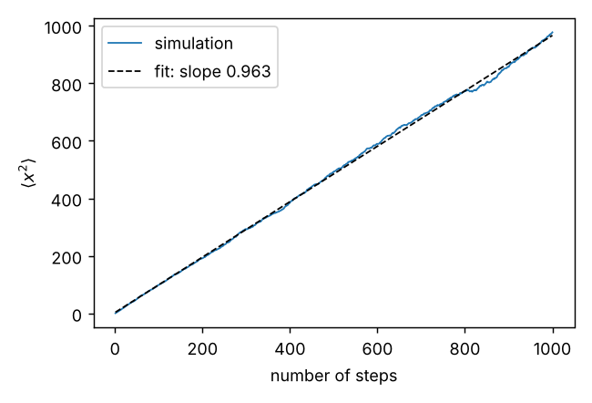

Curriculum/Computational labsLAB 101
Lab: Setting up a computational workstation
Before any simulation code, you need a working environment: a terminal in which you can navigate and run programs, a version of Python and its packages that does not change under your feet, a way to track the changes you make to your files, and a habit of recording how each result was produced. This lab builds that environment and uses it to run a very small simulation (a random walk) from start to finish. Everything is shown with real commands and real outputs from a Linux machine (Python 3.13, git 2.43); the same commands work on macOS, and on Windows through the Windows Subsystem for Linux (WSL).
- Reading time
- about 21 min
- Builds on
- COMP 101: Programming and workflow
- Leads to
- —
- Level
- Year 1: foundations
- Navigate and inspect files from the terminal and combine commands with pipes.
- Create a Python virtual environment, install packages in it, and record the versions.
- Run a script that saves its results and a run record, and plot the results.
- Use git to save versions, compare them, and try a change on a branch.
- Organise a project folder and reproduce a result in a fresh environment.
- Start a long job in the background and write a cluster job script.
Step 1. Choose where to work#
| System | How to get a terminal | Notes |
|---|---|---|
| Linux | Terminal application of the distribution | The reference platform of nearly all simulation codes. Used for this page. |
| macOS | Terminal (Applications → Utilities); install the command-line tools with xcode-select --install | The commands are the same as on Linux. |
| Windows | Install WSL (wsl --install in an administrator PowerShell), then open the Ubuntu app | Gives a complete Linux system. Native Windows works for Python alone, but many simulation programs are written for Linux. The commands of this page were not run on Windows. |
| Remote cluster | ssh username@cluster.university.edu | Where large jobs run (Step 8). You use the same terminal commands there. |
Step 2. The terminal in fifteen minutes#
The terminal runs a shell (usually bash or zsh) that reads a command, runs it, and prints the result. The most useful commands are in the following session, run in a project folder. (The user name and the path were shortened in the listing; the rest is the real output.) Read each command, predict the output, and then check:
$ pwd
/home/student/project
$ ls
input
output
requirements.txt
scripts
$ ls -l scripts
total 8
-rw-r--r-- 1 student student 833 Oct 23 10:02 plot_msd.py
-rw-r--r-- 1 student student 1300 Oct 23 10:02 random_walk.py
$ cd output && ls && cd ..
msd.csv
msd.png
run.json
$ head -n 3 output/msd.csv
step,msd
1.000000000000000000e+00,1.000000000000000000e+00
2.000000000000000000e+00,2.019200000000000106e+00
$ wc -l output/msd.csv scripts/*.py
4001 output/msd.csv
12 scripts/plot_msd.py
21 scripts/random_walk.py
4034 total
$ grep -n 'seed' scripts/random_walk.py
5:def run(n_walkers=2000, n_steps=1000, seed=42):
6: rng = np.random.default_rng(seed) # a recorded seed makes the run reproducible
14: n_walkers, n_steps, seed = 5000, 4000, 42
15: msd = run(n_walkers, n_steps, seed)
18: meta = {"script": "scripts/random_walk.py", "n_walkers": n_walkers, "n_steps": n_steps, "seed": seed, "slope": float(slope),
$ grep -c import scripts/*.py
scripts/plot_msd.py:2
scripts/random_walk.py:2
$ tail -n 1 output/msd.csv | cut -d, -f2
3.967165599999999813e+03
$ cut -d, -f2 output/msd.csv | sort -g | tail -n 1
3.968457600000000184e+03
$ which python; python -c 'import sys; print(sys.prefix)'
/home/student/venv/bin/python
/home/student/venv
$ echo $VIRTUAL_ENV
/home/student/venv
$ python scripts/random_walk.py > log.txt 2>&1; cat log.txt
MSD slope = 0.9867 (exact value 1)| Command | Meaning |
|---|---|
pwd, ls, ls -l, cd dir, cd .. | where am I; list files (with sizes, dates, permissions); change directory; go up one level |
mkdir -p a/b, cp, mv, rm | make directories (and parents); copy; move or rename; delete (there is no recycle bin: deleting is permanent) |
cat file, head -n 3 file, tail -n 1 file, less file | print a file; the first or last lines; page through a long file |
wc -l file, grep text file, cut -d, -f2, sort -g | count lines; search; select a column; sort numerically |
cmd1 | cmd2 | pipe: the output of cmd1 is the input of cmd2 (see the last-column example in the session above) |
cmd > file, cmd >> file, 2>&1 | write the output to a file (overwrite, append); also redirect the error messages |
which python, echo $VAR | which program would run; show an environment variable |
Tab key, up arrow, Ctrl-C | complete a name; previous command; stop the running program |
Two habits will save you hours: use relative paths inside a project (output/msd.csv, not /home/me/work/output/msd.csv) so that the project can be moved, and never put spaces in file or folder names. And before deleting with a wildcard (rm *.dat), run ls *.dat first to see what the pattern matches.
Step 3. A Python environment for the project#
Scientific packages change: a new version of NumPy may give slightly different results or break a script. A virtual environment is a private folder containing a Python interpreter and the packages for one project, so that projects do not disturb each other and a result can be recreated later. Create it, activate it, install packages, and record the exact versions with pip freeze:
python3 -m venv venv # create the environment in the folder "venv"
source venv/bin/activate # activate it (Windows PowerShell: venv\Scripts\Activate.ps1)
pip install numpy matplotlib # install packages into this environment only
python -c "import numpy, matplotlib; print('numpy', numpy.__version__, ' matplotlib', matplotlib.__version__)"
pip freeze > requirements.txt # record every installed package with its version
wc -l requirements.txt
head -5 requirements.txtnumpy 2.5.4 matplotlib 3.11.2
12 requirements.txt
contourpy==1.4.0
cycler==0.12.1
fonttools==4.67.0
kiwisolver==1.5.1
matplotlib==3.11.2The prompt of most shells changes to show (venv) while the environment is active, and which python now points inside it (see the session of Step 2: /home/student/venv/bin/python). To leave it, type deactivate. The file requirements.txt lists 12 packages, because installing numpy and matplotlib also installed their dependencies; whoever has this file can recreate the same environment with pip install -r requirements.txt (Step 6 does this). The alternative conda (from Miniforge, free) manages environments with conda create -n name python=3.12 and conda install -c conda-forge package; it is the usual choice when a package needs compiled libraries that pip cannot provide, as for some simulation codes. The commands of conda were not run for this page.
Step 4. A first simulation script that keeps a record#
The script simulates $2000$ random walkers that each take $1000$ steps of $\pm1$ and computes the mean-square displacement (MSD) after each step. For a random walk $\langle x^2\rangle=n$ after $n$ steps, the signature of diffusion: in one dimension $\langle x^2\rangle=2Dt$ with $D=\tfrac12$ here (MATH 204). Observe three habits of a good script: the random-number generator is created from a recorded seed (so the run can be repeated exactly); the results go to a file in output/; and a run record (run.json) saves the parameters, the result, the versions of Python and NumPy, the machine and the time it took:
"""A random walk in one dimension: the mean-square displacement grows linearly with the number of steps (diffusion)."""
import json, platform, sys, time
import numpy as np
def run(n_walkers=2000, n_steps=1000, seed=42):
rng = np.random.default_rng(seed) # a recorded seed makes the run reproducible
steps = rng.choice([-1, 1], size=(n_walkers, n_steps))
x = np.cumsum(steps, axis=1)
msd = (x.astype(float) ** 2).mean(axis=0) # mean-square displacement after each step
return msd
if __name__ == "__main__":
t0 = time.time()
n_walkers, n_steps, seed = 2000, 1000, 42
msd = run(n_walkers, n_steps, seed)
slope = np.polyfit(np.arange(1, n_steps + 1), msd, 1)[0] # for a simple random walk the exact slope is 1
np.savetxt("output/msd.csv", np.column_stack([np.arange(1, n_steps + 1), msd]), delimiter=",", header="step,msd", comments="")
meta = {"script": "scripts/random_walk.py", "n_walkers": n_walkers, "n_steps": n_steps, "seed": seed, "slope": float(slope),
"python": sys.version.split()[0], "numpy": np.__version__, "platform": platform.platform(), "seconds": round(time.time() - t0, 2)}
json.dump(meta, open("output/run.json", "w"), indent=2)
print("MSD slope = %.4f (exact value 1)" % slope)MSD slope = 0.9629 (exact value 1)
---
{
"script": "scripts/random_walk.py",
"n_walkers": 2000,
"n_steps": 1000,
"seed": 42,
"slope": 0.962865254829255,
"python": "3.13.16",
"numpy": "2.5.4",
"platform": "Linux-6.18.44-fc-v153-x86_64-with-glibc2.39",
"seconds": 0.24
}
---
step,msd
1.000000000000000000e+00,1.000000000000000000e+00
2.000000000000000000e+00,1.947999999999999954e+00
1001 output/msd.csvThe fitted slope is $0.9629$, not exactly the theoretical $1$: with a finite number of walkers the result has a statistical error. That is the first law of simulation: a number from a stochastic simulation is an estimate with an error bar, not a fact (Exercise 1 measures it). The run took $0.24$ s. The file msd.csv has the format of numbers in scientific notation, which is exact but hard to read; numpy.savetxt has a fmt option to change it.
Step 5. Plot the result#
A figure is the fastest way to detect a mistake. The second script reads the CSV file, fits a straight line, and saves a PNG (the line matplotlib.use("Agg") selects the backend that writes files and needs no screen, which is what you need on a remote server):
"""Plot the mean-square displacement of the random walk and fit the diffusion coefficient."""
import numpy as np, matplotlib
matplotlib.use("Agg") # no display needed: write the figure to a file
import matplotlib.pyplot as plt
step, msd = np.loadtxt("output/msd.csv", delimiter=",", skiprows=1, unpack=True)
slope, intercept = np.polyfit(step, msd, 1)
D = slope / 2 # in 1D, <x^2> = 2 D t with one step per unit time
fig, ax = plt.subplots(figsize=(5, 3.4))
ax.plot(step, msd, lw=1, label="simulation"); ax.plot(step, slope * step + intercept, "k--", lw=1, label=f"fit: slope {slope:.3f}")
ax.set(xlabel="number of steps", ylabel=r"$\langle x^2\rangle$"); ax.legend(); fig.tight_layout(); fig.savefig("output/msd.png", dpi=130)
print("D = %.4f (steps^2 per step); exact value 0.5" % D)D = 0.4814 (steps^2 per step); exact value 0.5
The curve is a straight line with a slope close to one; from $\langle x^2\rangle=2Dt$ the diffusion coefficient is $D=0.4814$ (against the exact $0.5$: $3.7\%$ low, the same error as the slope). Notice that the plot shows the fluctuations at large $n$ (the line is not perfectly smooth) and that they grow with $n$: fewer independent walkers contribute to an average at a given relative accuracy as the displacement grows, which is the reason why the diffusion coefficient is determined from the first part of the curve in real simulations (as in LAB 502).
Step 6. Version control with git#
You will change your scripts hundreds of times. Git stores every saved state (commit) of a folder, lets you see what changed, and lets you return to any earlier state, which is what makes it possible to say “this figure was made with the version of the script from last Tuesday”. Create a repository, add a .gitignore for files that should not be saved (the environment, generated files), commit, change something, look at the difference, and try a change on a branch (a parallel line of history) that you then merge:
git init -b main # make this folder a repository
git config user.name "Your Name" # once per machine (use --global)
git config user.email "you@example.org"
printf 'venv/\n__pycache__/\noutput/msd.csv\noutput/msd.png\n' > .gitignore
git status --short # what git sees
git add -A # stage everything that is not ignored
git commit -m "Random walk script and run record"
git log --oneline # the history
# ... edit the script: 2000 walkers -> 5000 walkers ...
git diff scripts/random_walk.py # what changed
git commit -am "Use 5000 walkers" # -a: all modified tracked files
git checkout -b longer-walk # new branch: try a longer walk
# ... edit: 1000 steps -> 4000 steps ...
git commit -am "Longer walks"
git log --oneline --graph --all # the history of all branches
git checkout main # go back to the main line
git merge longer-walk # bring the change into main
git ls-files # the files that git tracks?? .gitignore
?? output/
?? requirements.txt
?? scripts/
98f4a4f Random walk script and run record
--- after editing the number of walkers:
@@ -11,7 +11,7 @@ def run(n_walkers=2000, n_steps=1000, seed=42):
if __name__ == "__main__":
t0 = time.time()
- n_walkers, n_steps, seed = 2000, 1000, 42
+ n_walkers, n_steps, seed = 5000, 1000, 42
msd = run(n_walkers, n_steps, seed)
slope = np.polyfit(np.arange(1, n_steps + 1), msd, 1)[0] # for a simple random walk the exact slope is 1
np.savetxt("output/msd.csv", np.column_stack([np.arange(1, n_steps + 1), msd]), delimiter=",", header="step,msd", comments="")
MSD slope = 0.9991 (exact value 1)
MSD slope = 0.9867 (exact value 1)
* 7d99bf6 Longer walks
* 8163910 Use 5000 walkers
* 98f4a4f Random walk script and run record
7d99bf6 Longer walks
8163910 Use 5000 walkers
98f4a4f Random walk script and run record
.gitignore
output/run.json
requirements.txt
scripts/plot_msd.py
scripts/random_walk.pyThe output shows what git did: after git init, the four items are untracked (??); the first commit receives an identifier (98f4a4f here; yours will differ); git diff shows the removed line (-) and the added line (+); the merge is a “fast-forward” because main had not moved, so the history is a straight line. Only five files are tracked: the large generated files and the environment are ignored. The rules for what to commit: scripts, inputs, small records (run.json), the requirements file and documentation; not the virtual environment, large trajectories or other results that the scripts can regenerate. To undo an uncommitted edit, git restore file; to go back to an old version without losing the new one, git checkout <id> and then git checkout main. To share code, git remote add origin <url> and git push (GitHub, GitLab or a university server; credentials are required and were not set up here).
Step 7. Reproducibility: build the environment again#
The test of the whole setup is whether someone else (or you in six months) can reproduce the result. In a new virtual environment built from requirements.txt, the first version of the script gives:
python3 -m venv venv2 && source venv2/bin/activate
pip install -r requirements.txt
git checkout 98f4a4f # the first commit
python scripts/random_walk.pyMSD slope = 0.9629 (exact value 1)The same number as in Step 4 ($0.962865\ldots$ in run.json): the same seed, parameters and package versions give the same answer. This holds on the same computer; on another processor or operating system, floating-point sums can differ in the last digits, and programs that use parallel threads may differ in the order of operations (for molecular dynamics, the LAMMPS manual says that the same input on a different number of processors gives statistically but not numerically identical trajectories). The recommended project layout, used here, is:
project/
README.md what the project is, how to run it, what each folder contains
requirements.txt the exact package versions
input/ raw data, structure files, parameter files (never edit by hand after use)
scripts/ the code (run from the project root)
output/ results; each run also writes run.json
.gitignoreStep 8. Long jobs: background runs and a cluster job script#
A simulation that lasts hours must survive the closing of your terminal. Three levels of tools, from simple to professional:
nohup python scripts/random_walk.py > log.txt 2>&1 &runs the command in the background, detached from the terminal;tail -f log.txtfollows the output andjobsorpsshows it;kill PIDstops it. (A command ending in&that is not detached is stopped when you log out.)tmux(orscreen) creates a persistent terminal session on a remote machine:tmux new -s sim, detach withCtrl-b d, come back withtmux attach -t sim.- On a shared cluster you submit a job script to a scheduler such as SLURM:
sbatch job.sh. The template below is for orientation: the directives (#SBATCH) and the module names depend on your cluster, so read its documentation. It was not executed here because the environment had no scheduler:
#!/bin/bash
#SBATCH --job-name=random_walk
#SBATCH --time=00:10:00 # wall-clock limit
#SBATCH --ntasks=1
#SBATCH --cpus-per-task=1
#SBATCH --mem=2G
#SBATCH --array=1-10 # ten independent jobs, with SLURM_ARRAY_TASK_ID = 1..10
#SBATCH --output=logs/%x_%A_%a.out
source venv/bin/activate # the same environment as on the laptop
python scripts/random_walk.py --seed "$SLURM_ARRAY_TASK_ID"(The script of Step 4 has the seed fixed in the code; the template assumes that you have added a --seed command-line option, Exercise 5.) A job array is the natural way to run the independent samples that a stochastic simulation needs for its error bars. Useful commands: squeue -u $USER (my jobs), scancel JOBID, sacct (accounting). Remember that the login node of a cluster is for editing and submitting, not for running calculations.
Step 9. Typical problems#
| Symptom | Cause | Fix |
|---|---|---|
command not found: python | Python not installed, or only python3 exists | Use python3, or install Python (sudo apt install python3 python3-venv on Ubuntu) |
ModuleNotFoundError: No module named 'numpy' | the environment is not active, or the package was installed in another one | source venv/bin/activate; check which python |
error: externally-managed-environment from pip | pip refuses to modify the system Python | Use a virtual environment (this is exactly its purpose) |
FileNotFoundError: output/msd.csv | the script was started from the wrong folder, or the folder does not exist | pwd; run from the project root; mkdir -p output |
Figure does not appear / no display name | no screen on a remote machine | matplotlib.use("Agg") and save to a file |
Permission denied | no execute or write permission | ls -l; chmod +x script for scripts |
| git refuses to switch branches because of local changes | a tracked file was modified (even by a script run) | commit the change, git stash, or git restore it; keep generated files out of git |
| Results differ from yesterday’s | a different package version, seed or input | Compare run.json records; pin the versions |
- A reproducible computational project needs four habits from the first day: work in a terminal, keep each project in its own Python virtual environment with pinned package versions (pip freeze), keep scripts and inputs under version control with git, and let every run write a small record (seed, parameters, package versions, run time) next to its results.
- A random walk of 2000 walkers gave a mean-square-displacement slope of 0.9629 with seed 42, 0.9991 with 5000 walkers and 0.9867 with 5000 walkers of 4000 steps; the statistical scatter between seeds is 0.0286 for 2000 walkers, so a single run cannot be quoted with three decimals.
- The same script in a new virtual environment built from requirements.txt reproduces the result digit for digit (slope 0.962865...), which is what reproducibility means: same inputs, same seed, same software versions, same answer.
- Git records every change as a commit: git add and git commit save a state, git diff shows what changed, git log lists the history, and branches (git checkout -b) allow an experiment to be tried without touching the main line; large generated files and environments belong in .gitignore.
- Long simulations run in the background (nohup, tmux) or through a job scheduler such as SLURM on a cluster; whatever the system, the job must be able to be restarted and must record how it was started.
Exercises#
Run the random-walk script with 10 different seeds ($1,\ldots,10$) for $N=500$, $2000$ and $8000$ walkers and compute the mean and the standard deviation of the fitted slope. (Results of this experiment: $N=500$: $0.9991\pm0.0447$; $N=2000$: $1.0167\pm0.0286$; $N=8000$: $1.0065\pm0.0169$.) (a) How does the scatter scale with $N$? (b) Estimate the number of walkers needed to quote the slope to $1\%$ (one standard deviation). (c) Why is the single run with seed 42 ($0.9629$) not wrong?
Hint
For independent samples the error of an average falls as $1/\sqrt N$.
Full solution
(a) Theory: the standard deviation falls as $N^{-1/2}$: from $N=500$ to $8000$ ($16\times$) the scatter should fall by $4\times$; the measured $0.0447\to0.0169$ is a factor of $2.6$. With only 10 seeds the standard deviation itself is uncertain by about $\pm22\%$ ($1/\sqrt{2(10-1)}$), so the measurements are compatible with the $N^{-1/2}$ law but do not prove it; more seeds would sharpen the test. (b) From $N=2000$ ($0.0286$) to $0.01$ needs $N=2000\times(2.86)^2\approx1.6\times10^4$ walkers, and from $N=8000$ ($0.0169$) $N=8000\times1.69^2$ $=2.3\times10^4$; so about $2\times10^4$. (c) The seed-42 result is one sample from a distribution with a standard deviation of $0.03$: it lies $1.3$ standard deviations from the exact slope $1$, which is unremarkable. A single stochastic run must never be reported without an estimate of its error.
(a) $\propto N^{-1/2}$ (measured $2.6\times$ for $16\times N$, 10 seeds) (b) about $2\times10^4$ (c) one sample of the distribution
After Step 6 the history has three commits. (a) Which command shows the difference between the first and the last commit? (b) You edit scripts/random_walk.py badly and want to return to the committed version. What do you type? (c) You want the version of the script from the first commit in a separate file without changing your branch. What do you type?
Hint
Commits are identified by their (abbreviated) hash numbers shown by git log --oneline.
Full solution
(a) git diff 98f4a4f HEAD (or git diff HEAD~2 HEAD; here HEAD is the last commit; use the numbers shown by your own git log). (b) git restore scripts/random_walk.py (older git versions: git checkout -- scripts/random_walk.py), which discards the uncommitted changes of that file: be sure that you want that. (c) git show 98f4a4f:scripts/random_walk.py > old_version.py.
(a) git diff 98f4a4f HEAD (b) git restore (c) git show id:path > file
(a) In Step 7, why does the second environment give exactly the same slope as the first? (b) Name three things that could make a re-run give a different number although the script is unchanged. (c) What would you add to run.json to make the record more complete?
Hint
Think of what determines every random number and every floating-point sum.
Full solution
(a) The seed ($42$), the parameters and the versions of Python and NumPy are the same, so the generator produces the same random numbers and the same operations are done in the same order. (b) A different NumPy version (the random generator or the summation order may change), a different seed, a changed input or default parameter, a different CPU architecture or compiler flags (floating-point rounding), a program that runs in parallel with a non-deterministic order of operations, a library that uses the system clock, or a dependency that was updated automatically. (c) The git commit identifier of the code (git rev-parse HEAD) so that the exact script can be found, the command line used, the full list of packages (or a hash of requirements.txt), the date, and the machine name.
(a) same seed, parameters and versions (b) versions, seed/input, hardware or parallelism (c) the commit id and command line
Using only the commands of Step 2, (a) write a command that prints the number of lines of output/msd.csv in which the MSD (second column) is larger than $3000$ (use awk, a standard tool: awk -F, '$2 > 3000' prints the lines whose second field is larger than 3000). (b) Write a command that saves the last ten lines of the file to tail.csv. (c) What is wrong with rm output/*.csv > log.txt as a way of cleaning up?
Hint
Pipes connect commands: cmd1 | cmd2. For (c) think about what the redirection captures.
Full solution
(a) awk -F, '$2 > 3000' output/msd.csv | wc -l: the field separator is a comma, the condition is applied to each line and wc -l counts the lines that pass (the header line has a text in the second column; awk compares it as a string, so it is also counted: use tail -n +2 output/msd.csv | awk ... to skip it). (b) tail -n 10 output/msd.csv > tail.csv. (c) rm prints nothing when it succeeds, so log.txt will be empty and gives a false sense of a record; more seriously, rm deletes immediately and permanently: run ls output/*.csv first to see what the pattern matches, and use rm -i to ask for confirmation.
(a) awk -F, '$2 > 3000' file | wc -l (b) tail -n 10 file > tail.csv (c) rm is silent and permanent
Modify random_walk.py so that the seed is given on the command line (python scripts/random_walk.py --seed 7) and the run record is written to output/run_7.json. Then (a) write the SLURM array job of Step 8 so that ten seeds run as ten independent tasks, (b) write a small script that reads the ten records and prints the mean and the standard error of the slope, (c) explain why this is better than one run of ten times more walkers.
Hint
Use argparse from the standard library for the command line, and glob to find the records.
Full solution
(a) In the script: import argparse; p = argparse.ArgumentParser(); p.add_argument("--seed", type=int, default=42); seed = p.parse_args().seed and name the record with f"output/run_{seed}.json"; the job script of Step 8 then runs the command with --seed "$SLURM_ARRAY_TASK_ID" for ten array tasks. (b) import glob, json, numpy as np; s = [json.load(open(f))["slope"] for f in glob.glob("output/run_*.json")]; print(np.mean(s), np.std(s, ddof=1) / np.sqrt(len(s))). (c) Ten independent runs give the error bar directly from their scatter (the standard error), whereas one large run gives a single number with no information on its uncertainty (unless it is split into blocks); the runs also run in parallel and finish in the time of one of them, and if a job fails only one tenth of the data is lost. The statistical accuracy is the same for the same total number of walkers.
(a) job array with --seed $SLURM_ARRAY_TASK_ID (b) mean and std/$\sqrt n$ (c) gives the error bar and runs in parallel
Going further and references#
- Wilson, G. et al., “Good enough practices in scientific computing”, PLOS Computational Biology 13, e1005510 (2017): short and practical; and the Software Carpentry lessons (
software-carpentry.org) on the shell, git and Python: free, with exercises. - Chacon, S. and Straub, B., Pro Git (free online at
git-scm.com/book): the reference on git. - The Python documentation on virtual environments (the chapter “Virtual Environments and Packages” of the tutorial at
docs.python.org) and the NumPy random-number documentation (numpy.org/doc, “Random Generator”). - SLURM documentation (
slurm.schedmd.com) and the user guide of your own cluster. - Next: LAB 201 builds crystal structures in Python, and LAB 502 uses the same habits to run molecular dynamics.